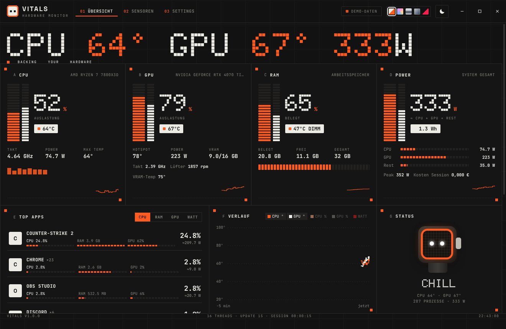
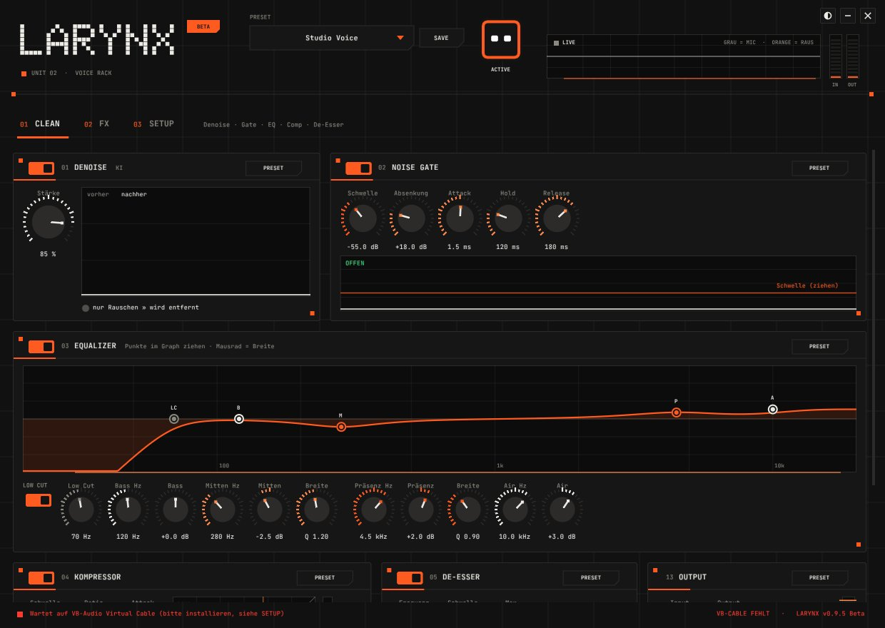
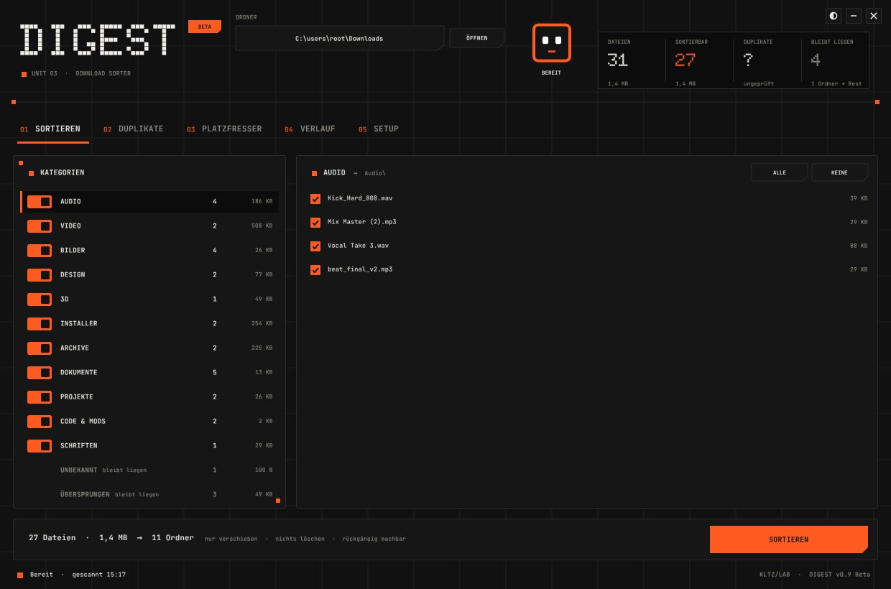
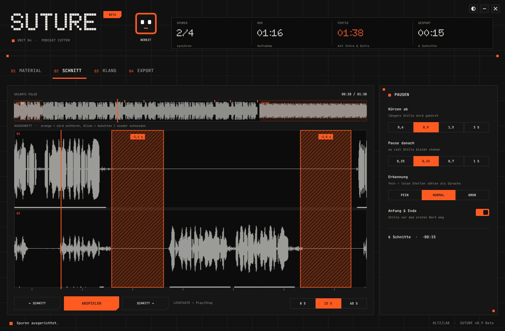
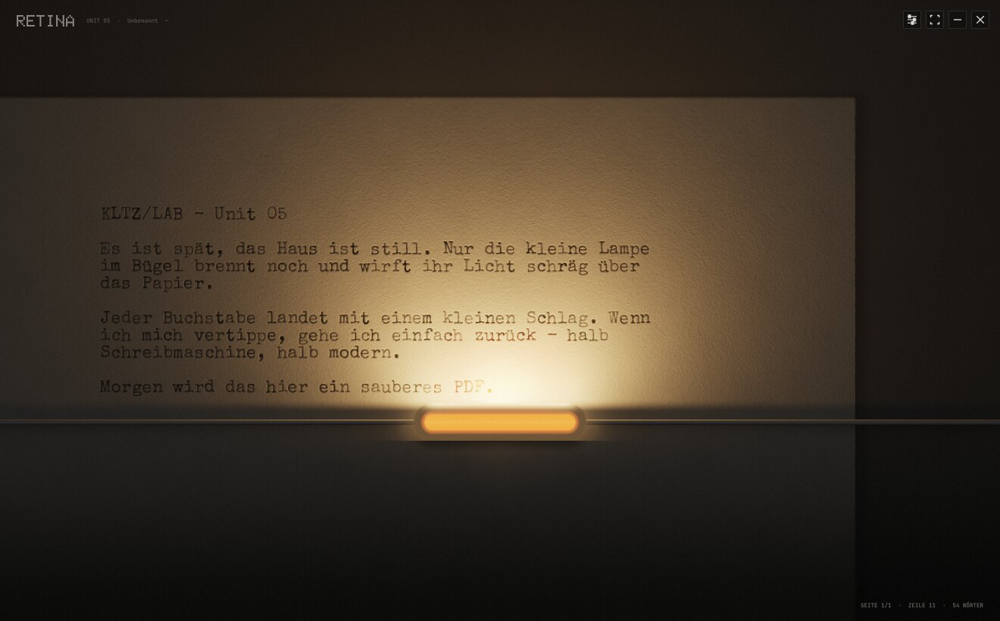

KLTZ/LAB
Kleine Windows-Tools, gebaut weil es sie so nicht gab. Jedes bekommt eine Nummer, ein Datenblatt und einen Download. Kostenlos, ohne Account, ohne Telemetrie.
VITALS
CPU, GPU, RAM und Stromverbrauch mit allen Temperaturen, die dein PC hergibt. Dazu die Top-Apps, die gerade am meisten ziehen. Fünf Designs, jedes hell und dunkel.

LARYNX
Ein komplettes Studio-Rack für dein Mikro, live vor Discord, OBS & Co. KI-Rauschunterdrückung, Gate, EQ, Kompressor und Effekte von Radio bis Dalek.

DIGEST
Verdaut deinen Downloads-Ordner. Audio, Video, Bilder, Installer und Projekte landen in eigenen Ordnern, Duplikate erkennt DIGEST am Inhalt. Gelöscht wird nie etwas, jede Aktion lässt sich zurückdrehen.

SUTURE
Näht deine Podcast-Folge zusammen: Spuren rein, Pausen raus, Intro mit Musik davor, Outro dahinter. Alle Spuren bleiben synchron, am Ende kommt eine fertige MP3 auf Podcast-Lautstärke raus.

RETINA
Schreiben wie auf einer Schreibmaschine: echtes Papier mit Struktur, eine warme Lampe im Bügel, jeder Anschlag klackt. Nur dass Backspace funktioniert und am Ende ein sauberes PDF rauskommt.

NÄCHSTES TOOL
Hier landet das nächste Teil der Reihe. Jedes neue Tool bekommt seine Nummer, sein Datenblatt und einen Eintrag in der Download-Liste.
DOWNLOAD
Installer · Windows x64| Unit | Version | Größe | SHA-256 |
|---|
SmartScreen
Die Installer sind nicht digital signiert. Windows warnt deshalb beim ersten Start: „Weitere Informationen“ → „Trotzdem ausführen“. Mit dem SHA-256-Wert oben kannst du prüfen, ob die Datei unverändert ist.
VITALS
Startet mit Adminrechten, sonst gibt Windows keine CPU-Temperaturen raus. Der Installer bietet den signierten PawnIO-Treiber an: für CPU-, Mainboard-Temps und Lüfter mit „Ja“ bestätigen.
LARYNX
Leitet deine bearbeitete Stimme an Discord, OBS & Co. weiter. In der App führt „Discord einrichten“ durch die Einstellung, mit „Bypass“ hörst du jederzeit den Vorher-Nachher-Vergleich. Ersetzt SixtyVox: Die alte Version wird beim Installieren entfernt, deine Presets ziehen mit um.
DIGEST
Startet mit deinem Downloads-Ordner und zeigt erst nur eine Vorschau. Doppelte Dateien wandern in einen Quarantäne-Ordner, nicht in den Papierkorb. Alles, was DIGEST verschiebt, kannst du unter VERLAUF wieder an den alten Platz holen.
SUTURE
Zieh deine Aufnahmen ins Fenster, eine Datei pro Person oder alles in einer. SUTURE fasst die Originale nie an, es schreibt nur neue Dateien. Der MP3-Encoder LAME liegt als eigene DLL bei.
RETINA
Die Anschlag-Geräusche erzeugt RETINA selbst. Wenn du eigene Sounds hast, leg sie als WAV in einen Ordner (key…, space…, return…, bell…, backspace…) und wähle ihn in den Einstellungen unter TON. Die Dateien bleiben bei dir, sie werden nicht mitverteilt.